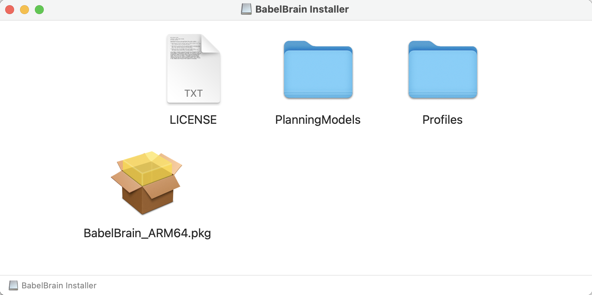

Installation and Running
Preliminary requirements
OS
Currently, macOS (ARM64, X64), Windows/Linux (X64) are supported. Windows users can run BabelBrain natively or via WSL2 with NVidia GPUs (see this guide).
GPU
BabelBrain supports GPUs enabled via CUDA, OpenCL or Metal. High-end GPUs (8 GPU RAM or more) are recommended. ARM64 processors (M1, M2) in Mac systems with 24GB or more RAM are highly recommended. BabelBrain was designed with Mac systems based on M1 and M2 processors as primary targets.
Note for Intel-based Mac systems
Intel-based systems need to have a dedicated AMD GPU (internal or external via Thunderbolt). Intel-based iMac Pro and MacPro systems have internal GPUs suitable for sub 500 kHz simulations (i.e., Vega 56, Vega 64). An external GPU (i.e., AMD W6800 Pro) offers excellent performance and capability for high-frequency simulations.
Blender
Blender is required for constructive solid geometry operations. Install with default options.
SimNIBS
While BabelBrain does not invoke directly SimNIBS tools, BabelBrain depends on the output generated by SimNIBS 3.x headreco or SimNIBS 4.x charm processing tools. Consult the Releases section in SimNIBS for installation options. We recommended using SimNIBS 4.x charm for better results.
Optional -FSL
FSL's flirt tool is used as a backup method if dealing with imaging datasets that are not 100% orthogonal; ITK often can't handle them and flirt can be used to enforce orthogonal affine matrices. This situation happens rarely, but it comes with the limitation that FSL is only available in macOS and Linux. FSL's init scripts must be activated in the .bash_profile or .zsh_profile.
Navigation-planning software
While not strictly required, it is highly recommended to use planning software to establish the target localization and orientation, called trajectory in the following documentation, of the ultrasound transducer for the simulation of transcranial ultrasound. The trajectory is just a transformation matrix in the T1W space that represents the translation-rotation of a vector describing the target and direction of ultrasound. BabelBrain can import trajectories defined in proprietary software (Rogue Research's Brainsight) or open-source visualization software (3DSlicer). Instructions are detailed in the pipeline section of this documentation.
Standalone application
Ready-to-use applications (no need for Python installation) for macOS and Windows are available in the Releases section.
For MacOS, download the installer and drag "BabelBrain" into the Applications folder.

The first time you will use you may be prompted to authorize it to run and access directories. You may also need to authorize it in the Security settings of macOS.
For Windows, download the MSI installer file and run to install BabelBrain. Shortcuts will be created in the Desktop and Start menu. Note: CUDA 11.7+ must be installed.
Keep a copy of the PlanningModels and ThermalProfiles directories. PlanningModels contain STL files useful for the planning of TUS. ThermalProfiles contains examples of timings of the TUS exposure (total duration on, duration off, duty cycle).
Manual Installation
Python 3.9/3.10. Anaconda/miniconda is recommended. - if running in Apple ARM64 processors (M1, M1 Max, etc.), be sure to use a native ARM64 version.
Clone the BabelBrain repository. The code can be run in a Python environment; consult examples of conda environment files in the repository. In macOS, you need a healthy XCode installation with command line tools installed. For Linux, an LTS Ubuntu installation such as 20.04 with a CUDA installation. For Windows, Visual Studio 2019+ with CUDA 11.7+.
Running
Standalone application
Just open BabelBrain from the Applications section in macOS or in Windows from the Start Menu.
Manual execution
Activate the conda environment, change to the BabelBrain/BabelBrain directory and execute
python BabelBrain.py
Building standalone application
A pyinstaller specification file is provided to build the macOS and Windows applications. In the BabelBrain/BabelBrain directory run
pyinstaller BabelBrain.spec --noconfirm
A new application will be created at BabelBrain/BabelBrain/dist/
For macOS, a DMG image installer can be created with the BabelBrain/BabelBrain/create_dmg.sh script. You need to install create-dmg tool with homebrew.